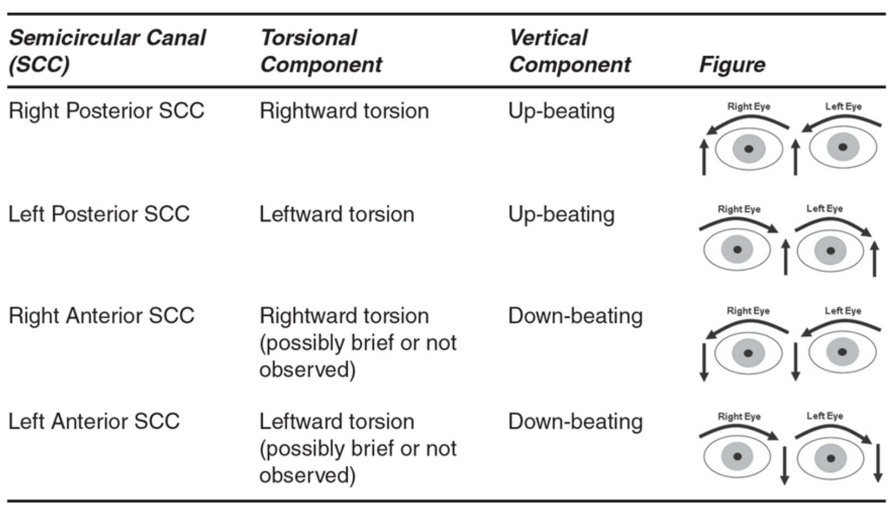

-----Explanation------
Question 1:
A. Dix-Hallpike test and supine roll test
A classic history of short-duration, positionally triggered vertigo suggests BPPV.
The Dix-Hallpike test is mainly used to diagnose posterior canal BPPV. A positive Dix-Hallpike test would be vertigo and up-beating torsional nystagmus toward the affected side for short duration with latency. Sign and symptoms of 20-50% patients after 1-3 months would improve spontaneously. Nystagmus may be in a small amplitude which cannot be seen with bare eyes. It would be helpful to use enhanced viewing(Frenzel lenses and infrared goggle) in assessment.

Fig 1. Different type of torsional nystagmus
As the patient has a history compatible with BPPV and the Dix-Hallpike test shows no nystagmus, supine roll test is suggested to assess lateral canal BPPV. In this case, the supine roll test is negative.
It implies it is more likely posterior canal BPPV with spontaneous improvement or subjective/atypical BPPV. If the nystagmus is absent even with enhanced viewing(Frenzel lenses and infrared goggle) and the symptoms persist, differential diagnosis (vestibular migraine, etc.) may need to be considered.
B. HINTS battery
HINTS is designed for differentiating central and peripheral causes. This patient has purely positional, episodic vestibular syndrome. Based on the neurological test performed and history, HINTS is not indicated.
C. Vertebral artery test
Vertebrobasilar insufficiency (VBI) is when blood flow to the back of your brain reduces or stops. Risk factors of VBI include age (>50), coronary artery disease or peripheral artery disease, Diabetes, family history of VBI, hypertension, history of smoking, obesity, atherosclerosis, hyperlipidemia, cardiac diseases.
Clinical test could be performed in sustained neck extension and rotation to screen for positive symptoms(5 Ds: dizziness, diplopia, dysarthria/dysphagia, drop attacks, dysesthesia; 3 Ns: nausea/vomiting, nystagmus, numbness).
In this case, the test is used as a quick screening before Dix-Hallpike test/ Epley’s maneuver to check positional tolerance.
VBI positional tests (e.g., sustained cervical rotation/extension) have low sensitivity (often 0–57%), moderate to good specificity (67–100%), but overall predictive value is limited. False negatives/positives are common. If the test is positive, it is a clinical red flag and requires a referral to a doctor for further diagnostic tests to investigate suspected VBI.
D. Comprehensive balance assessment
Balance tests are not always indicated in suspected BPPV cases without risk of fall. However, considering the background history of this patient(age, osteoporosis, fear of fall), it is beneficial for the patient to have a balance assessment.
Question 2:
A. Canalith repositioning procedure (Modified Epley maneuver)
Posterior canal BPPV is the most likely diagnosis according to the history and the clinical tests. The nystagmus is now absent but positional vertigo persists, it's often still worth trying an Epley or similar maneuver.
For older adults with osteoporosis/fall risk, gentler side-lying alternative may be used.
Persistent symptoms beyond a few months or atypical features should prompt checking for other causes (e.g., vestibular migraine, residual vestibular hypofunction, or rare central issues).
B. Brandt-Daroff habituation exercise
Brandt-Daroff exercise (BDE) is a home-based habituation protocol involving repeated side-lying movements to provoke and then adapt to vertigo symptoms. It was originally proposed in 1980 as a way to promote central compensation and potentially dislodge otoconia in benign paroxysmal positional vertigo (BPPV), particularly posterior canal.
It works as a home exercise for residual dizziness/habituation after successful repositioning, or a second-line option when repositioning is contraindicated (e.g., severe neck issues, inability to tolerate positioning).
Current evidence (from systematic reviews, meta-analyses, RCTs, and guidelines up to recent years) shows limited and inconsistent efficacy when it is used as a standalone or first-line treatment, especially compared to canalith repositioning maneuvers like the Epley or Semont. Multiple comparisons show repositioning maneuvers (e.g., Epley) achieve higher resolution rates (often 70–90% in 1–2 sessions) vs. BDE alone (typically lower, around 40–60% in some studies).
C. Balance training (such as single leg stand on foam surface)
The patient does not have significant risk of fall or deficit in balance in Berg Balance Test and Romberg test. In this case, balance training is not necessary. General fall prevention advice could be given.
D. Advice to consult doctor in AED
This option is reserved for suspected central cause of dizziness and clinical red flag. Based on the history and clinical examination, it is not likely a central cause of dizziness.
Bottomline:
This case is most likely Right posterior canal BPPV (subjective/atypical variant in partial spontaneous resolution phase).
Primary management: Perform a modified Epley maneuver (right-sided. Reassess in 1 week - 1 month.)
Adjuncts: Provide education on BPPV (benign, high spontaneous improvement rate ~20–50% in weeks/months, but repositioning accelerates recovery), fall risk reduction (avoid triggers temporarily, cautious movements, home modifications), and when to seek urgent care (new/worsening symptoms like constant vertigo, neurological changes).
If no improvement after 1–2 attempts: Re-evaluate (repeat tests with enhanced viewing if available), consider differentials (e.g., vestibular migraine), or refer to ENT/vestibular specialist.
Learning point:
Understand classic presentation and management of posterior canal BPPV and subjective/atypical BPPV.
For more information, you may refer to...
Clinical Practice Guideline: Benign Paroxysmal Positional Vertigo (Update)
https://www.entnet.org/quality-practice/quality-products/clinical-practice-guidelines/bppv/
Alvarenga, G. A., Barbosa, M. A., & Porto, C. C. (2011). Benign paroxysmal positional vertigo without nystagmus: diagnosis and treatment. Brazilian journal of otorhinolaryngology, 77(6), 799–804.
https://doi.org/10.1590/S1808-86942011000600018
Sideris, G., Korres, G., Lazarou, I., Vasileiou, E., Male, A., & Kaski, D. (2026). Differentiating Atypical BPPV from Central Positional Vertigo: A Narrative Review. NeuroSci, 7(2), 32.
Uz, U., Uz, D., Akdal, G., & Çelik, O. (2019). Efficacy of Epley Maneuver on Quality of Life of Elderly Patients with Subjective BPPV. The journal of international advanced otology, 15(3), 420–424.
https://doi.org/10.5152/iao.2019.6483
Case creator: Mr. Leon Yiu
← Back to Homepage